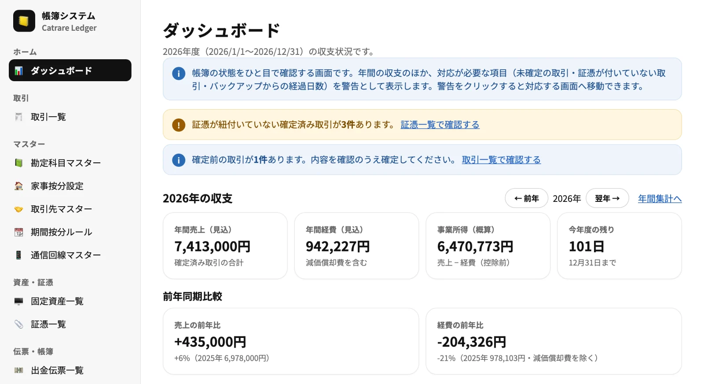
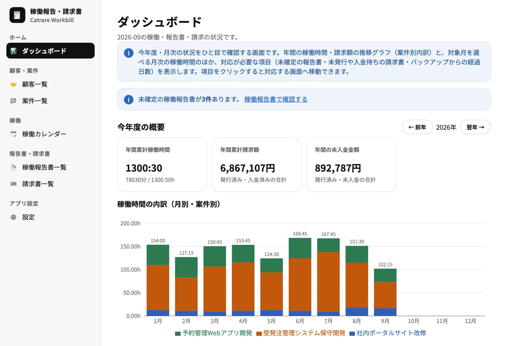

Web App
LEDGER（帳簿システム）
個人事業主向けの帳簿システムです。収入・経費を入力すると複式簿記の仕訳を自動で作り、損益計算書・貸借対照表・青色申告決算書の転記用データまで出力できます。無料でブラウザから使え、データは端末内に保存されます。
Freelance Engineering Studio
カトレアテックは、業務システムの設計・開発・運用改善を中心に、 データ活用やAI活用まで、実務に根ざした技術支援を行います。
シンプルで堅実なシステムづくりを大切にし、 開発だけでなく、運用・改善・定着まで見据えて支援します。
技術と業務の間に立ち、無理なく使い続けられる仕組みをつくります。
カトレアテックは、個人事業として活動する技術支援サービスです。 業務システムの開発、既存システムの改善、運用課題の整理、 データ活用基盤やダッシュボードの検討、AIを活用した業務支援ツールの開発などを行います。 大きな構想だけで終わらせず、現場で使える形に落とし込むことを重視しています。
システム開発・運用・データ活用を中心に支援します。
業務要件の整理から設計、実装、改善まで、実務に合わせたシステム開発を支援します。
既存システムの課題整理、運用負荷の軽減、障害対応や改善サイクルの整備を支援します。
データ整理、分析基盤、ダッシュボード作成など、意思決定に使えるデータ活用を支援します。
生成AIやAIエージェントを活用した、業務支援ツールや品質チェックの仕組みづくりを支援します。
カトレアテックが開発・提供するアプリと作品です。

Web App
個人事業主向けの帳簿システムです。収入・経費を入力すると複式簿記の仕訳を自動で作り、損益計算書・貸借対照表・青色申告決算書の転記用データまで出力できます。無料でブラウザから使え、データは端末内に保存されます。

Web App
フリーランス向けの稼働報告書・請求書作成アプリです。稼働時間を入力すると契約条件に沿って報酬を自動計算し、月次の稼働報告書と請求書を作成・発行できます。無料でブラウザから使え、データは端末内に保存されます。
iPhone App
自転車ライドの走行ルート・速度・距離・消費カロリーを計測するiPhoneアプリです。計測データは端末内に保存されます。
App Store 近日公開
iPhone App
iPhoneを左右に傾けて猫を操作し、床を飛び移りながら上へ登り続ける縦スクロールのジャンプアクションゲームです。無料で遊べます（広告表示あり）。
App Store 近日公開
LINE Sticker
ミヌエットをモデルにした、もふもふ猫のやさしい癒しスタンプ「ミヌエット風もふもふ猫スタンプ v2」を LINE STORE で販売しています。
システム開発、運用改善、データ活用、AI活用に関するご相談は、 以下のフォームよりお問い合わせください。